| 日付 | 2021年5月30日（日） |
|---|---|
| 山域 | 奥多摩 |
| メンバー | 家族（妻、長女・10歳、長男・7歳） |
| 山行形態 | 子連れ日帰り |
| アクセス | 車 |
| ルート (Map) | 水根駐車場 (8:29) - (9:01) 登山口 - (9:54) 風ノ神土 - (10:55) 六ツ石山 (11:32) - (12:46) 登山口 - (13:18) 水根駐車場 |
久し振りの山登り。晴れ予報だが上空の寒気の影響で不安定な天気の予報。
近場の短めの山に行って、雨が降る前に下山、というプランを立てる。
目的地は奥多摩の六ツ石山。以前、七ツ石山に登った時から、
その次に登る山として目星をつけていた山だ。
好展望の山でもないので、微妙な天気の時に登るのにちょうど良いだろう。
水根の駐車場に車を停める。標高520m。
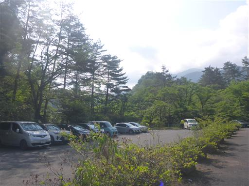
奥多摩湖畔に向かう道路は封鎖されている。
コロナの影響のようで観光地を閉じているようだ。
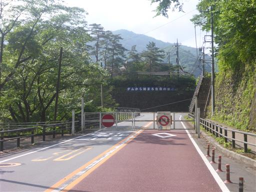
車道を歩いて六ツ石山登山口を目指す。
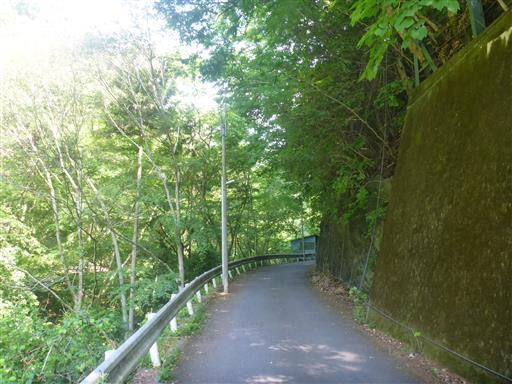
深い渓谷。
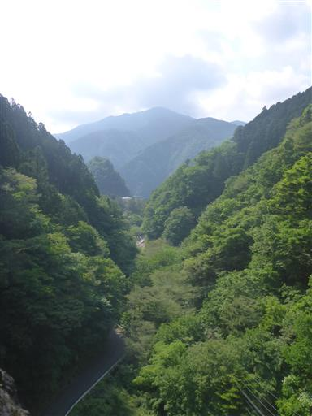
ユキノシタの花が咲いている。
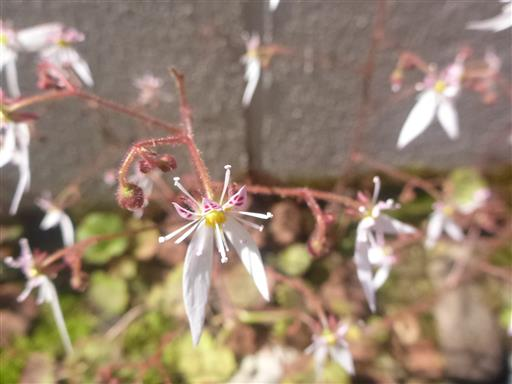
車道をしばらく登ると展望が開ける。眼下の奥多摩湖が美しい。
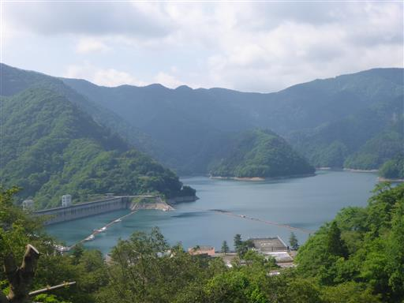
立派なクモの巣。
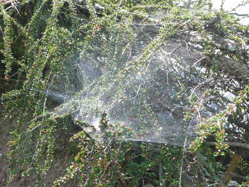
六ツ石山登山口に到着。
暑い中道草を食いながらダラダラ歩いたので、ここまでかなり時間がかかってしまった。
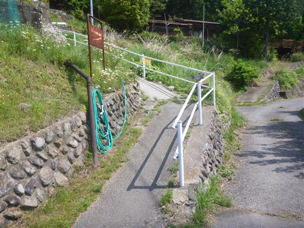
少し登ると神社が現れる。水根産土神社だ。
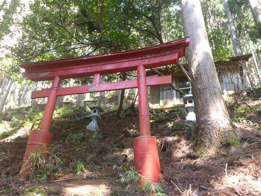
絵馬が掛かっている。絵馬はどこで手に入るのだろう？
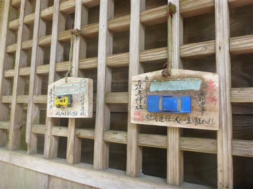
建物の中に小さな社がある。賽銭箱がちょっと遠いがお金を投げ入れる。
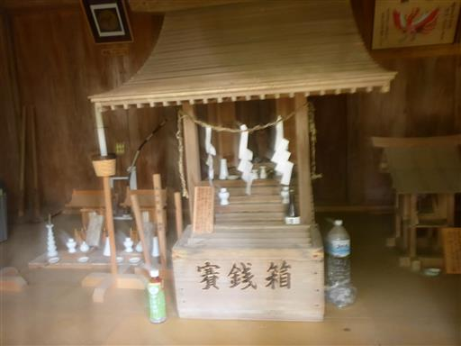
植林地帯の中のつまらない登りが続く。
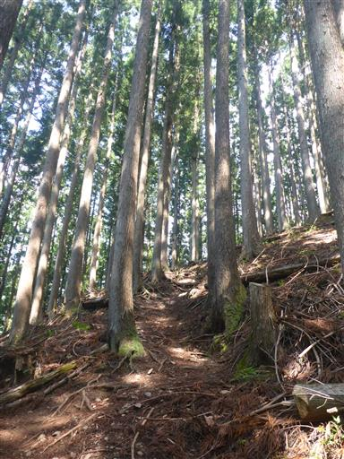
しばらく急登を耐えると、ようやく半分自然林になる。
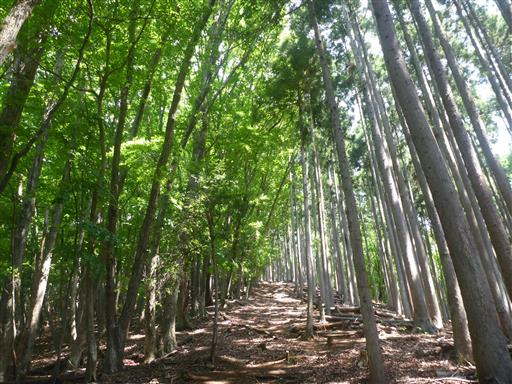
風ノ神土。小さな祠だ。
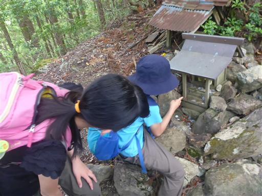
木の洞に水が溜まっている。中を覗くと小さな虫がうようよしている。
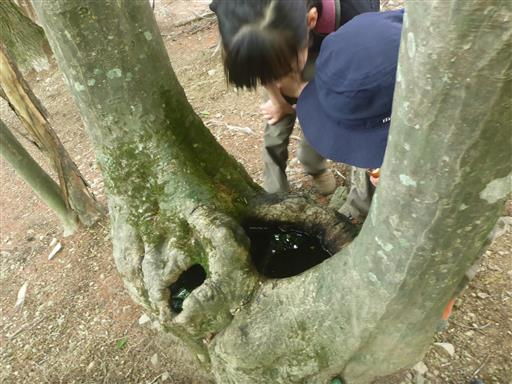
大きく切り開かれた道になる。
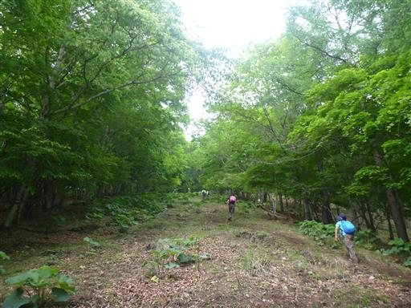
マルバダケブキの葉。とにかく巨大だ。
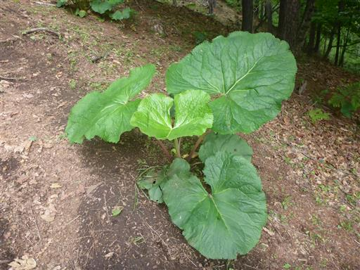
あちらこちらマルバダケブキだらけだ。
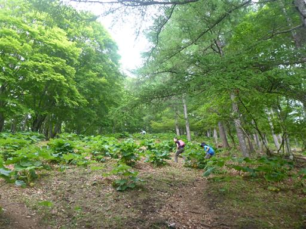
日が差してくる。植林地帯もなくなり、ようやく歩いていて楽しい道になる。
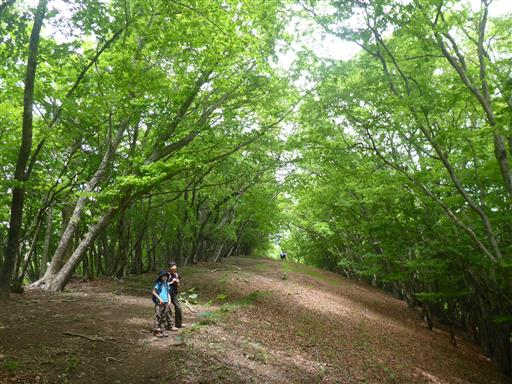
広場。テントでも張りたくなるような良い場所だ。
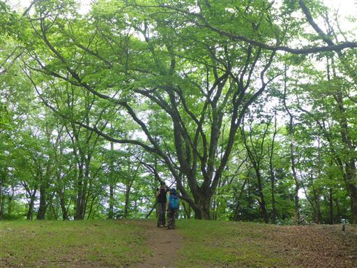
地面に白い花びらが無数に落ちている。何の花だろうか？

六ツ石山に到着。標高1479m。
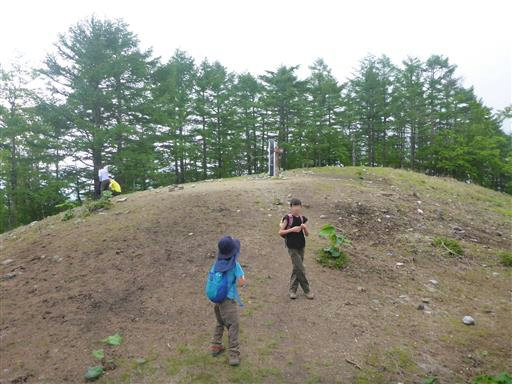
おなじみの奥多摩の立派な山頂標識。
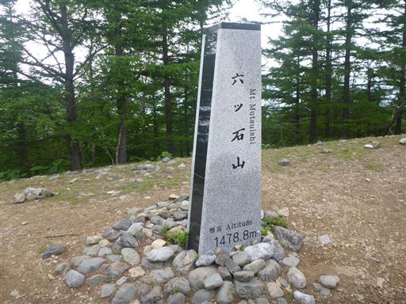
空はどんよりしている。雲が厚そうで一雨きそうだ。
昼食をとったらすぐに下山にかかる。
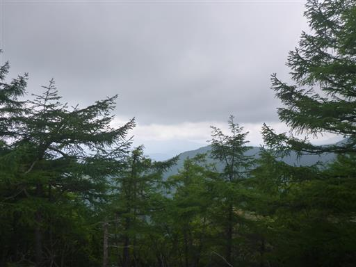
無事下りてくる。
駐車場ではほんのわずかの雨、そして車での帰り道は地面がかなり濡れていて、
その後、中央道で雨雲の下に突入した。
少し時間が遅かったり場所がずれていたりしたら、雨に降られていたかもしれない。危なかった。
六ツ石山は地味な山ではあったが、1400mを越える山頂は涼しく気持ちよかった。
急登続きの尾根道で、良い運動になった一日だった。
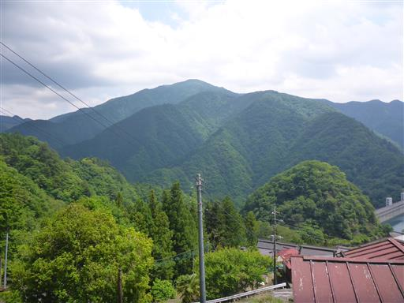